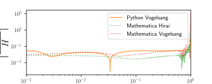

Examples and Tutorials
Quick Start
This tutorial demonstrates how to use tParton to evolve transversity PDFs using both the direct integration (Hirai) and Mellin moment (Vogelsang) methods.
Installation
pip install tpartonBasic Example: Evolving the GS-A Distribution
Let's evolve the Gehrmann-Stirling A-type distribution, which is a standard benchmark for transversity PDF evolution.
Step 1: Import Required Libraries
import numpy as np
import matplotlib.pyplot as plt
from scipy.special import gamma
from tparton.t_evolution import evolve as t_evolve
from tparton.m_evolution import evolve as m_evolve
Step 2: Define the Initial PDF
We use the GS-A parametrization from Gehrmann (1995):
# Create x grid with logarithmic spacing
n = 3000
x = np.power(10, np.linspace(np.log10(1/3000), 0, n))
x = np.concatenate(([0], x))
def A(a, b, g, rho):
"""Normalization factor for GS-A parametrization"""
return (1 + g * a / (a + b + 1)) \
* gamma(a) * gamma(b+1) / gamma(a + b + 1) \
+ rho * gamma(a + 0.5) * gamma(b + 1) / gamma(a + b + 1.5)
def pdf_u(x, eta_u=0.918, a_u=0.512, b_u=3.96, gamma_u=11.65, rho_u=-4.60):
"""Up quark transversity PDF"""
return eta_u / A(a_u, b_u, gamma_u, rho_u) * \
np.power(x, a_u) * np.power(1-x, b_u) * \
(1 + gamma_u * x + rho_u * np.sqrt(x))
def pdf_d(x, eta_d=-0.339, a_d=0.780, b_d=4.96, gamma_d=7.81, rho_d=-3.48):
"""Down quark transversity PDF"""
return pdf_u(x, eta_d, a_d, b_d, gamma_d, rho_d)
# Prepare input arrays (x values and x*f(x))
u = np.stack((x, pdf_u(x))).T
d = np.stack((x, pdf_d(x))).T
Step 3: Evolve Using the Hirai Method (Direct Integration)
# Evolve from Q₀² = 4 GeV² to Q² = 200 GeV²
u_evolved_hirai = t_evolve(
u,
Q0_2=4.0, # Initial scale
Q2=200.0, # Final scale
l_QCD=0.231, # QCD scale parameter
n_f=4, # Number of flavors
n_t=100, # Number of time steps
n_z=500, # Number of integration points
morp='minus', # Evolution type
logScale=True, # Use log spacing for z
alpha_num=False # Use analytical alpha_s
)
d_evolved_hirai = t_evolve(d, Q0_2=4, Q2=200, l_QCD=0.231, n_f=4,
n_t=100, morp='minus', logScale=True, alpha_num=False)
Step 4: Evolve Using the Vogelsang Method (Mellin Moments)
# Evolve using Mellin moment method (typically faster)
u_evolved_vogel = m_evolve(
u,
Q0_2=4.0,
Q2=200.0,
n_x=n, # Number of output x points
l_QCD=0.231,
n_f=4,
morp='minus',
degree=5, # Convergence acceleration degree
alpha_num=False
)
d_evolved_vogel = m_evolve(d, Q0_2=4, Q2=200, n_x=n, l_QCD=0.231,
n_f=4, morp='minus', alpha_num=False)
Step 5: Plot and Compare Results
plt.figure(figsize=(10, 6))
# Initial distribution
plt.plot(x, u[:,1] + d[:,1], '--', c='k', alpha=0.3,
label='Initial (Q² = 4 GeV²)', linewidth=2)
# Evolved using Hirai method
plt.plot(x, u_evolved_hirai[1] + d_evolved_hirai[1],
label='Hirai method', alpha=0.7)
# Evolved using Vogelsang method
plt.plot(u_evolved_vogel[0], u_evolved_vogel[1] + d_evolved_vogel[1],
label='Vogelsang method', alpha=0.7)
plt.xlabel('x')
plt.ylabel(r'$x(\Delta_T u + \Delta_T d)$')
plt.xlim([1e-3, 1])
plt.ylim([0, 0.21])
plt.xscale('log')
plt.legend()
plt.title('Evolution to Q² = 200 GeV²')
plt.grid(alpha=0.3)
plt.show()
Method Validation
The following figure shows that both tParton methods agree with each other, the original Mathematica implementation, and the APFEL++ code:

Figure 1: Evolution of the GS-A transversity distribution from Q₀² = 4 GeV² to Q² = 200 GeV². Both Python implementations (Hirai and Vogelsang methods) agree with Mathematica and APFEL++ results.
Relative Differences
The relative differences between methods are typically below 10⁻⁴ for most of the x range:
Figure 2: Relative differences |X-H|/H where H is the Hirai result and X is the alternative method. Differences are dominated by discretization effects at small x.
Command-Line Interface
tParton can also be used directly from the command line:
Using the Mellin Method
# Prepare input file (two columns: x, x*f(x))
echo "0.001 0.0001
0.01 0.005
0.1 0.05
0.5 0.1
0.9 0.01" > input.dat
# Evolve from Q₀² = 3.1 to Q² = 10.6 GeV²
python -m tparton m input.dat 3.1 10.6 --morp plus -o output.dat
# View results
cat output.dat
Using the Hirai Method
# Same input, using direct integration
python -m tparton t input.dat 3.1 10.6 --morp plus -o output.dat
# Specify numerical parameters
python -m tparton t input.dat 3.1 10.6 --morp plus \
--n_t 200 --n_z 1000 --logScale -o output.dat
Additional Options
# Use NLO evolution (default is NLO)
python -m tparton m input.dat 3.1 10.6 --order 2 -o output.dat
# Use LO evolution
python -m tparton m input.dat 3.1 10.6 --order 1 -o output.dat
# Specify number of flavors and QCD scale
python -m tparton m input.dat 3.1 10.6 --n_f 4 --l_QCD 0.231 -o output.dat
# Get help
python -m tparton --help
python -m tparton m --help
python -m tparton t --help
Advanced Usage
Numerical vs Analytical Running Coupling
By default, tParton uses numerical ODE integration for the running coupling α_s(Q²). You can switch to the analytical approximation:
# Numerical (default, more accurate)
result = m_evolve(pdf, Q0_2=4, Q2=200, alpha_num=True)
# Analytical (faster, good approximation)
result = m_evolve(pdf, Q0_2=4, Q2=200, alpha_num=False, l_QCD=0.231)
Controlling Discretization
For the Hirai method, control accuracy via time steps and integration points:
# Higher accuracy (slower)
result = t_evolve(pdf, Q0_2=4, Q2=200, n_t=500, n_z=2000)
# Faster (lower accuracy)
result = t_evolve(pdf, Q0_2=4, Q2=200, n_t=50, n_z=200)
For the Vogelsang method, control accuracy via the convergence acceleration degree:
# Higher degree = better convergence (slower)
result = m_evolve(pdf, Q0_2=4, Q2=200, degree=10)
# Lower degree = faster (may need more output points)
result = m_evolve(pdf, Q0_2=4, Q2=200, degree=3)
Evolution Types
The morp parameter selects the quark combination:
# Plus combination: ΔT q⁺ = ΔT u + ΔT d
result = m_evolve(pdf, Q0_2=4, Q2=200, morp='plus')
# Minus combination: ΔT q⁻ = ΔT u - ΔT d
result = m_evolve(pdf, Q0_2=4, Q2=200, morp='minus')
Parameter Studies and Optimization
Optimal Convergence Degree for Mellin Method
The Vogelsang method uses Cohen's accelerated alternating series for the inverse Mellin transform. The degree parameter controls convergence accuracy. Higher degrees improve accuracy but increase computation time:

Figure 3: Relative error as a function of degree and number of x points. The optimal degree depends on the desired accuracy and available computational resources. For most applications, degree=5 provides a good balance.
Discretization Analysis for Hirai Method
The direct integration method requires careful selection of time steps (n_t) and integration points (n_z). Both parameters affect accuracy and computation time:
Figure 4: Relative error as a function of n_t (time steps) and n_x (spatial resolution). The Hirai method converges with sufficient discretization, but requires more points than the Mellin method for comparable accuracy.
Recommendations
- For speed: Use Vogelsang method with degree=3-5 and n_x=100-200
- For accuracy: Use Vogelsang method with degree=7-10 and n_x=500-1000
- For peaked PDFs: Use Hirai method with logScale=True, n_t=200-500, n_z=1000-2000
- For smooth PDFs: Use Vogelsang method (typically 10-100x faster)
Jupyter Notebook Examples
Complete Jupyter notebooks demonstrating all features are available in the examples directory on GitHub. Here's what each notebook covers:
1. Generate Mathematica initial distributions.ipynb
Shows how to create the GS-A (Gehrmann-Stirling A-type) transversity distribution used for validation:
import numpy as np
from scipy.special import gamma
# Define GS-A parametrization
def A(a, b, g, rho):
return (1 + g * a / (a + b + 1)) * gamma(a) * gamma(b+1) / gamma(a + b + 1) \
+ rho * gamma(a + 0.5) * gamma(b + 1) / gamma(a + b + 1.5)
def pdf_u(x, eta_u=0.918, a_u=0.512, b_u=3.96, gamma_u=11.65, rho_u=-4.60):
return eta_u / A(a_u, b_u, gamma_u, rho_u) * \
np.power(x, a_u) * np.power(1-x, b_u) * \
(1 + gamma_u * x + rho_u * np.sqrt(x))
# Save initial distributions for evolution
np.savetxt('input_upd.dat', np.stack((x, u[:,1]+d[:,1])).T)
np.savetxt('input_diff.dat', np.stack((x, u[:,1]-d[:,1])).T)
2. Running Hirai.ipynb & Running Hirai-exact_alpha.ipynb
Complete workflow for the direct integration method, including:
- Loading initial distributions
- Evolving using analytical or numerical α_s
- Comparing results with different numerical parameters
- Saving results for further analysis
from tparton.t_evolution import evolve
# Evolve with analytical alpha_s (faster)
u_evolved = evolve(u, Q0_2=4, Q2=200, l_QCD=0.231, n_f=4,
n_t=100, n_z=500, morp='minus',
logScale=True, alpha_num=False)
# Evolve with numerical alpha_s (more accurate)
u_evolved_num = evolve(u, Q0_2=4, Q2=200, n_f=4,
n_t=100, n_z=500, morp='minus',
logScale=True, alpha_num=True,
Q0_2_a=91.1876**2, a0=0.118/(4*np.pi))
# Save results
np.savez('hirai_results.npz', x=x, u_evolved=u_evolved[1])
3. Running Vogelsang.ipynb & Running Vogelsang-exact_alpha.ipynb
Complete workflow for the Mellin moment method with:
- Evolution using Mellin transforms
- Inverse Mellin transform via Cohen method
- Parameter studies varying degree of convergence acceleration
- Comparison with direct integration results
from tparton.m_evolution import evolve
# Evolve with varying convergence degrees
for deg in [3, 5, 7, 10]:
result = evolve(u, Q0_2=4, Q2=200, n_x=3000,
l_QCD=0.231, n_f=4, morp='minus',
degree=deg, alpha_num=False)
np.savez(f'vogelsang_deg_{deg}.npz',
x=result[0], evolved=result[1])
4. Figures.ipynb
Reproduces all validation figures from the paper, including:
- Comparison of Python implementations with Mathematica and APFEL++
- Relative difference plots showing agreement between methods
- Parameter optimization heatmaps
- Convergence studies for both methods
import matplotlib.pyplot as plt
# Load all evolution results
hirai = np.load('hirai_approx.npz')
vogelsang = np.load('vogelsang_approx.npz')
mathematica = np.genfromtxt('mathematica_hirai_ana.dat').T
apfel = np.genfromtxt('apfel_out.txt').T
# Create comparison plot
plt.figure(figsize=(10, 6))
plt.plot(hirai['x'], hirai['u_evolved'] + hirai['d_evolved'],
label='Python Hirai', alpha=0.7)
plt.plot(vogelsang['evolved_x'], vogelsang['u_evolved'] + vogelsang['d_evolved'],
label='Python Vogelsang', alpha=0.7)
plt.plot(*mathematica, ':', label='Mathematica', alpha=0.7)
plt.plot(*apfel, '-.', label='APFEL++', alpha=0.7)
plt.xscale('log')
plt.legend()
plt.savefig('fig1.svg')
Additional Resources
All notebooks and data files are available in the examples directory on GitHub. The repository also includes:
- Evolve-Final.nb - Mathematica notebook for independent validation of Mellin moments and numerical integration
- vogelsang_exact_alpha_variable_degree/ - Directory with systematic studies of convergence acceleration degree
- hirai_exact_alpha_nx_nt/ - Directory with systematic studies of discretization parameters
- Comparison data files - Pre-computed results from Mathematica and APFEL++ for validation
Running the Examples
To run the example notebooks:
# Clone the repository
git clone https://github.com/mikesha2/tParton.git
cd tParton/examples
# Create environment with required packages
conda create -n transversity python=3.10 jupyterlab matplotlib scipy numpy
conda activate transversity
# Install tParton
pip install tparton
# Launch Jupyter
jupyter lab
References
- tParton paper: Sha, C.M. & Ma, B. (2025). arXiv:2409.00221
- Hirai method: Hirai, M., Kumano, S., & Miyama, M. (1998). Comput. Phys. Commun. 111, 150-166
- Vogelsang method: Vogelsang, W. (1998). Phys. Rev. D 57, 1886-1894
- GS-A distribution: Gehrmann, T. & Stirling, W.J. (1996). arXiv:hep-ph/9512406